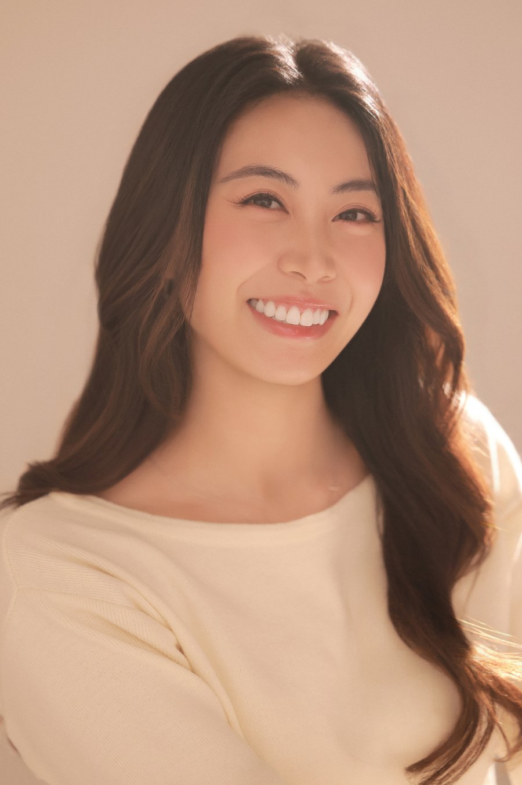

The Story Behind My Craft
I build the stage where communities come together and moments come to life.
I have always been drawn to the work happening behind the scenes — bringing people, ideas, and details together to create experiences that feel effortless. My work sits at the intersection of event production, operations, and community, where I build the structure that allows meaningful moments to happen. Whether it's a workplace activation, live production, or community program, I love turning ideas into an experience people remember.
My foundation comes from a lifelong love of competition, teamwork, and growth. As a competitive volleyball player, I learned that success isn't built on individual skill alone — it comes from preparation, trust, resilience, and confidence in the team beside you. Those lessons shape how I work today: work hard, play hard, and create opportunities for others to shine.
Currently, I design workplace activations at Planet Labs, where I build scalable event programs, improve operational processes, and create playbooks that help teams deliver meaningful experiences. Before Planet, I supported major concert productions and led community programming for an esports initiative, where I saw firsthand how powerful events can be in bringing audiences together, building communities, and creating memories that last beyond the moment.
No matter the project, my goal stays the same: create experiences that connect people, leave a lasting impact, and build something meaningful for the communities that come next.

- Based in
- San Francisco, CA
- Currently
- Workplace Coordinator @ Planet Labs
- Focus
- Event Production, Partnerships, Community Experiences
- Open to
- Full-time roles